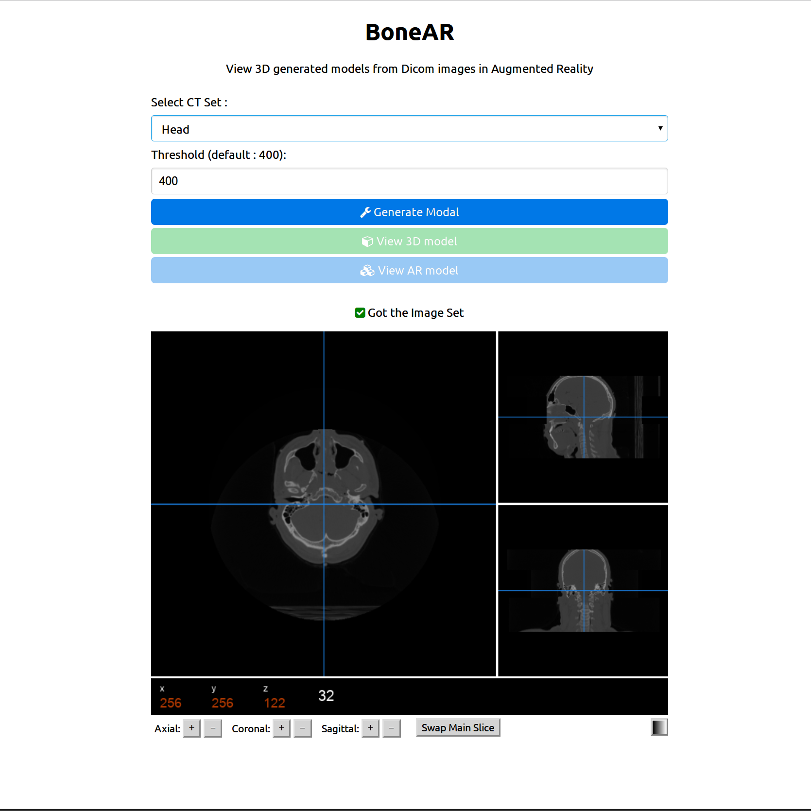

Augmented Reality on the web browser in the field of medical sciences
Presented by Sagar V DwibhashyamIntroduction
Augmented Reality
- Integration of Virtual Elements with the Real-World Elements.
WebGL
- 2D and 3D graphics on the browser
Augmented Reality on the Browser

Project
Tools and Frameworks
- Backend components
- Node.js server
- Express.js Engine
- Jade/Pug Templating Engine
- Node-VTK
- MongoDB and Mongoose
- Frontend components
- Jquery.js
- PureCSS and Font-Awesome
- Papaya Viewer
- Three.js
- Threex.WebAR
Implementation
Route Establishment
- Index Route
- Get-set Route
- Gen-Model Route
- Show-3d Route
- Show-AR
Interface
Model Generation
- VTK Pipeline
- Reading the Dicom Image Set
- Finding the axis, pixel spacing and dimension of the set
- Applying the threshold
- Generate the base model with a Discrete Marching Cube algorithm
- Decimate and optimize the model
Model Visualization
AR Model Sample
VTP File Loader
An extension to the Three.js VTK Loader
Format
Maybe compressed
Evaluation
Decimation and Smoothening
Frame Rate
File Loading